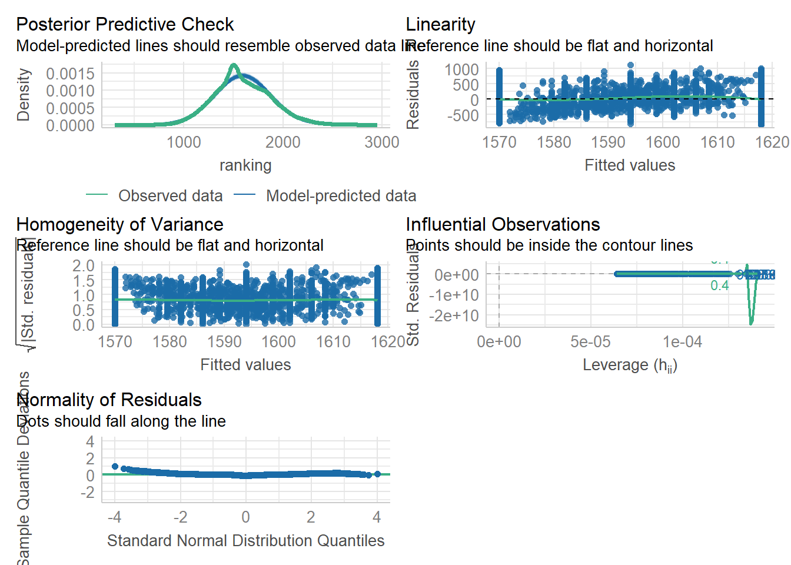

library(tidyverse)
library(skimr) # skim()
library(lmtest) # lrtest()
library(performance) # check_model()
library(ggfortify) # autoplot()
library(correlation) # correlation()
library(car) # vif()
library(broom) # glance()
library(lm.beta) # lm.beta()final_assignment
Chess
Data source: Chess Game Dataset (Lichess) TidyTuesday / 2024-10-01 https://github.com/rfordatascience/tidytuesday/blob/main/data/2024/2024-10-01/readme.md
Research question
Does the success rate (as the rate of wins out of the total number of games played by the player), the rate of playing white role ( rate of taking the white role -> does playing in the starter position offer advantage?) and the experience (as total nr of games played) influence the players’ ranking (the player’s highest rating)?
Reading data file
chess <- readr::read_csv('https://raw.githubusercontent.com/rfordatascience/tidytuesday/main/data/2024/2024-10-01/chess.csv')Rows: 20058 Columns: 16
── Column specification ────────────────────────────────────────────────────────
Delimiter: ","
chr (9): game_id, victory_status, winner, time_increment, white_id, black_id...
dbl (6): start_time, end_time, turns, white_rating, black_rating, opening_ply
lgl (1): rated
ℹ Use `spec()` to retrieve the full column specification for this data.
ℹ Specify the column types or set `show_col_types = FALSE` to quiet this message.Data cleaning & EDA
View data & details
glimpse(chess)Rows: 20,058
Columns: 16
$ game_id <chr> "TZJHLljE", "l1NXvwaE", "mIICvQHh", "kWKvrqYL", "9tXo1A…
$ rated <lgl> FALSE, TRUE, TRUE, TRUE, TRUE, FALSE, TRUE, FALSE, TRUE…
$ start_time <dbl> 1.50421e+12, 1.50413e+12, 1.50413e+12, 1.50411e+12, 1.5…
$ end_time <dbl> 1.50421e+12, 1.50413e+12, 1.50413e+12, 1.50411e+12, 1.5…
$ turns <dbl> 13, 16, 61, 61, 95, 5, 33, 9, 66, 119, 39, 38, 60, 31, …
$ victory_status <chr> "outoftime", "resign", "mate", "mate", "mate", "draw", …
$ winner <chr> "white", "black", "white", "white", "white", "draw", "w…
$ time_increment <chr> "15+2", "5+10", "5+10", "20+0", "30+3", "10+0", "10+0",…
$ white_id <chr> "bourgris", "a-00", "ischia", "daniamurashov", "nik2211…
$ white_rating <dbl> 1500, 1322, 1496, 1439, 1523, 1250, 1520, 1413, 1439, 1…
$ black_id <chr> "a-00", "skinnerua", "a-00", "adivanov2009", "adivanov2…
$ black_rating <dbl> 1191, 1261, 1500, 1454, 1469, 1002, 1423, 2108, 1392, 1…
$ moves <chr> "d4 d5 c4 c6 cxd5 e6 dxe6 fxe6 Nf3 Bb4+ Nc3 Ba5 Bf4", "…
$ opening_eco <chr> "D10", "B00", "C20", "D02", "C41", "B27", "D00", "B00",…
$ opening_name <chr> "Slav Defense: Exchange Variation", "Nimzowitsch Defens…
$ opening_ply <dbl> 5, 4, 3, 3, 5, 4, 10, 5, 6, 4, 1, 9, 3, 2, 8, 7, 8, 8, …skim(chess)| Name | chess |
| Number of rows | 20058 |
| Number of columns | 16 |
| _______________________ | |
| Column type frequency: | |
| character | 9 |
| logical | 1 |
| numeric | 6 |
| ________________________ | |
| Group variables | None |
Variable type: character
| skim_variable | n_missing | complete_rate | min | max | empty | n_unique | whitespace |
|---|---|---|---|---|---|---|---|
| game_id | 0 | 1 | 8 | 8 | 0 | 19113 | 0 |
| victory_status | 0 | 1 | 4 | 9 | 0 | 4 | 0 |
| winner | 0 | 1 | 4 | 5 | 0 | 3 | 0 |
| time_increment | 0 | 1 | 3 | 7 | 0 | 400 | 0 |
| white_id | 0 | 1 | 2 | 20 | 0 | 9438 | 0 |
| black_id | 0 | 1 | 2 | 20 | 0 | 9331 | 0 |
| moves | 0 | 1 | 2 | 1413 | 0 | 18920 | 0 |
| opening_eco | 0 | 1 | 3 | 3 | 0 | 365 | 0 |
| opening_name | 0 | 1 | 9 | 91 | 0 | 1477 | 0 |
Variable type: logical
| skim_variable | n_missing | complete_rate | mean | count |
|---|---|---|---|---|
| rated | 0 | 1 | 0.81 | TRU: 16155, FAL: 3903 |
Variable type: numeric
| skim_variable | n_missing | complete_rate | mean | sd | p0 | p25 | p50 | p75 | p100 | hist |
|---|---|---|---|---|---|---|---|---|---|---|
| start_time | 0 | 1 | 1.483617e+12 | 2.850151e+10 | 1.376772e+12 | 1.477547e+12 | 1.49601e+12 | 1.50317e+12 | 1.504493e+12 | ▁▁▁▂▇ |
| end_time | 0 | 1 | 1.483618e+12 | 2.850140e+10 | 1.376772e+12 | 1.477547e+12 | 1.49601e+12 | 1.50317e+12 | 1.504494e+12 | ▁▁▁▂▇ |
| turns | 0 | 1 | 6.047000e+01 | 3.357000e+01 | 1.000000e+00 | 3.700000e+01 | 5.50000e+01 | 7.90000e+01 | 3.490000e+02 | ▇▃▁▁▁ |
| white_rating | 0 | 1 | 1.596630e+03 | 2.912500e+02 | 7.840000e+02 | 1.398000e+03 | 1.56700e+03 | 1.79300e+03 | 2.700000e+03 | ▁▇▇▂▁ |
| black_rating | 0 | 1 | 1.588830e+03 | 2.910400e+02 | 7.890000e+02 | 1.391000e+03 | 1.56200e+03 | 1.78400e+03 | 2.723000e+03 | ▁▇▇▂▁ |
| opening_ply | 0 | 1 | 4.820000e+00 | 2.800000e+00 | 1.000000e+00 | 3.000000e+00 | 4.00000e+00 | 6.00000e+00 | 2.800000e+01 | ▇▂▁▁▁ |
Data cleaning
# Nr of unique games in the dataset
chess |>
group_by(game_id) |>
summarize(n = n()) |>
arrange(desc(n))# A tibble: 19,113 × 2
game_id n
<chr> <int>
1 XRuQPSzH 5
2 0gTDO6Av 4
3 1b0kpInt 4
4 CvakmVNb 4
5 CxQlHSnq 4
6 DijZlfMy 4
7 GstYv2mJ 4
8 I8odmGjb 4
9 LyRqbD4d 4
10 O037dETy 4
# ℹ 19,103 more rows# Data cleaning: filter fro duplicated and missing data
chess_clean <- chess |>
filter(!duplicated(chess)) # filter for duplicated rowsPlot: Player ratings per role
chess_clean |>
pivot_longer(cols = c(black_rating, white_rating), names_to = "variable", values_to = "value")|>
ggplot(chess_clean, mapping = aes(value))+
geom_histogram(fill = "darkblue") +
facet_wrap(~variable, scale = "free") +
theme_bw()+
labs( title = "Distributions of player ratings per role", y = NULL, x = NULL)`stat_bin()` using `bins = 30`. Pick better value with `binwidth`.Plot: Counts of total wins per role
ggplot(chess_clean, aes(winner, fill = winner))+
geom_bar(show.legend = FALSE) +
geom_text(stat='count', aes(label=..count..), vjust=-1)+
ylim(0, 11000)+
labs(title = "Total count of results of the chess games")+
scale_fill_viridis_d(option = "G", begin = 0.3, end = 0.8)+
theme_light()Warning: The dot-dot notation (`..count..`) was deprecated in ggplot2 3.4.0.
ℹ Please use `after_stat(count)` instead.There seems to be a small difference between number of wins in favour of the white player, albeit not prominent ( + third unexpected category of “draw”)
Player-level data
Extract player-level data from the game-level chess_clean dataset
# Initialise player-level data by extracting the unique pseudonyms
player_statistics <- chess_clean |>
select(white_id, black_id) |>
pivot_longer(cols = c(white_id, black_id), names_to = "role", values_to = "player")
player_statistics <- player_statistics |> select(player) |> distinct(player)
# Get the nr of games played by each player
## "experience" is a temporary tibble
experience <- chess_clean |>
select(black_id, white_id) |>
pivot_longer(cols = c(black_id, white_id), names_to = c("role"), values_to = "player")
nr_games <- experience |>
group_by(player) |>
summarize(games_nr=n())
player_statistics <- player_statistics |> left_join(nr_games, by = "player") # join the nr of games to the player statistics table
# Get the idices (counts) of each player choosing black or white pieces
role_choice <- experience |>
group_by(player, role) |>
summarize(n=n()) |>
pivot_wider( names_from = role, values_from = n)`summarise()` has grouped output by 'player'. You can override using the
`.groups` argument.player_statistics <- player_statistics |> left_join(role_choice, by = "player") # join the counts of black-white roles to player statistics
player_statistics <- player_statistics |>
replace_na(list(black_id = 0, white_id = 0)) |>
mutate(white_rate = white_id / games_nr, black_rate = black_id / games_nr) # fill the NAs with 0 and calculate rates
# Get the number of games won by the player (count of explicitly won games, draws don't count)
win_rate <- chess_clean |> mutate( player = case_when(
winner == "white" ~ white_id,
winner == "black" ~ black_id,
winner == "draw" ~ "0")) |>
select(player) |>
group_by(player) |>
summarize(win_nr=n()) |>
filter(player != 0)
player_statistics <- player_statistics |> left_join(win_rate, by = "player") #join the won games count to player statistics
player_statistics <- player_statistics |>
replace_na(list(win_nr = 0)) |>
mutate(win_rate = win_nr / games_nr) # fill the NAs with 0 and calculate rate
# Get the rank (the highest) ofthe player
## player rank 2 is a temporary table
player_rank <- chess_clean |>
select(white_id, white_rating) |>
distinct_at(vars(white_id), .keep_all = TRUE) |>
rename(player = white_id, ranking = white_rating)
player_rank2 <- chess_clean |>
select(black_id, black_rating) |>
distinct_at(vars(black_id), .keep_all = TRUE) |>
rename(player = black_id, ranking = black_rating)
player_rank <- bind_rows(player_rank, player_rank2)|>
group_by(player) |>
slice_max(ranking, n = 1) |>
distinct()
player_statistics <- player_statistics |> left_join(player_rank, by = "player") #join players' rank to player statistics
player_statistics# A tibble: 15,635 × 9
player games_nr white_id black_id white_rate black_rate win_nr win_rate
<chr> <int> <int> <int> <dbl> <dbl> <int> <dbl>
1 bourgris 1 1 0 1 0 1 1
2 a-00 3 1 2 0.333 0.667 0 0
3 skinnerua 1 0 1 0 1 1 1
4 ischia 1 1 0 1 0 1 1
5 daniamurash… 4 4 0 1 0 4 1
6 adivanov2009 4 0 4 0 1 0 0
7 nik221107 3 3 0 1 0 2 0.667
8 trelynn17 2 2 0 1 0 0 0
9 franklin145… 1 0 1 0 1 0 0
10 capa_jr 1 1 0 1 0 1 1
# ℹ 15,625 more rows
# ℹ 1 more variable: ranking <dbl>View player statistics histograms
player_statistics |>
pivot_longer(cols = c(-player), names_to = "variable", values_to = "value")|>
ggplot(player_statistics, mapping = aes(value))+
geom_histogram(fill = "lightblue") +
facet_wrap(~variable, scale = "free") +
theme_bw()+
labs( title = "Distributions of player statistics variables", y = NULL, x = NULL)`stat_bin()` using `bins = 30`. Pick better value with `binwidth`.Explore relationship between ranking and win ratio
ggplot(player_statistics, aes(win_rate, ranking))+
geom_point()+
geom_smooth(method = "lm", se = FALSE)+
labs(title = "Association between players ranking and their win rate", y = "Player's rank ", x= "Ratio of games won")+
theme_minimal()`geom_smooth()` using formula = 'y ~ x'Explore relationship between total number of games played and ranking ( with inclusion of win rate)
ggplot(player_statistics, aes(games_nr, win_rate, color = ranking))+
geom_point()+
labs(title = "Relationship between the experiance and the ranking of the player", y= "Win rate", x="Total number of games played", color = "Ranking")+
theme_bw()Model building
1st model: Ranking predicted by total nr of games, win ratio and the white role ratio
games_lm <- lm(ranking ~ win_rate + games_nr + white_rate, data = player_statistics)
summary(games_lm)
Call:
lm(formula = ranking ~ win_rate + games_nr + white_rate, data = player_statistics)
Residuals:
Min 1Q Median 3Q Max
-836.04 -185.24 -26.66 186.71 1129.25
Coefficients:
Estimate Std. Error t value Pr(>|t|)
(Intercept) 1565.9997 4.1079 381.219 <2e-16 ***
win_rate 47.8045 4.7674 10.027 <2e-16 ***
games_nr 0.4889 0.3833 1.275 0.202
white_rate 5.7499 4.9250 1.167 0.243
---
Signif. codes: 0 '***' 0.001 '**' 0.01 '*' 0.05 '.' 0.1 ' ' 1
Residual standard error: 276.6 on 15631 degrees of freedom
Multiple R-squared: 0.006656, Adjusted R-squared: 0.006466
F-statistic: 34.91 on 3 and 15631 DF, p-value: < 2.2e-16Assumption check & Model diagnostics
Normality, linearity, homosceadsticity (+ collinearity)
check_model(games_lm)Results: linearity, homoscedasticity and normality plots seem acceptable; small protursion of predicitons
Influential outliers
games_lm |>
augment() |>
select(.cooksd) |>
arrange(desc(.cooksd))# A tibble: 15,635 × 1
.cooksd
<dbl>
1 0.0105
2 0.00734
3 0.00564
4 0.00449
5 0.00409
6 0.00389
7 0.00380
8 0.00306
9 0.00306
10 0.00305
# ℹ 15,625 more rowsautoplot(games_lm, which = 4)Results: Cook’s distances are under 1
games_lm |>
augment() |>
select(.std.resid) |>
arrange(desc(.std.resid))# A tibble: 15,635 × 1
.std.resid
<dbl>
1 4.08
2 3.62
3 3.60
4 3.52
5 3.49
6 3.47
7 3.47
8 3.40
9 3.35
10 3.31
# ℹ 15,625 more rowsResults: some standard residuals are above 3
Multicollinearity
vif(games_lm) win_rate games_nr white_rate
1.003021 1.000184 1.002844 player_statistics |>
select(ranking, games_nr)|>
correlation(method = "spearman")# Correlation Matrix (spearman-method)
Parameter1 | Parameter2 | rho | 95% CI | S | p
--------------------------------------------------------------------
ranking | games_nr | 0.04 | [0.02, 0.05] | 6.12e+11 | < .001***
p-value adjustment method: Holm (1979)
Observations: 15635Results: VIF shows a lower value, however the plot indicates collienarity for the total number of games, also there is a significant medium Spearman correlation between ranking and total number of games
Correlation of residuals
durbinWatsonTest(games_lm) lag Autocorrelation D-W Statistic p-value
1 0.5882666 0.8233914 0
Alternative hypothesis: rho != 0Results: the test below 2 indicates positive autocorrelation
Conclusion: total nr of games may be showing (plot vs vif test) a VIF (collinearity) too high to be included in the model, also seem to have influential outliers (std.residuals vs Cook’s distance). Std residuals may be too high, autocorrelation can be overly present.
2nd model: Ranking predicted by the win ratio
lm_win <- lm(ranking ~ win_rate, data = player_statistics)
summary(lm_win)
Call:
lm(formula = ranking ~ win_rate, data = player_statistics)
Residuals:
Min 1Q Median 3Q Max
-834.03 -185.01 -27.01 186.98 1128.98
Coefficients:
Estimate Std. Error t value Pr(>|t|)
(Intercept) 1570.011 3.218 487.82 <2e-16 ***
win_rate 48.019 4.760 10.09 <2e-16 ***
---
Signif. codes: 0 '***' 0.001 '**' 0.01 '*' 0.05 '.' 0.1 ' ' 1
Residual standard error: 276.7 on 15633 degrees of freedom
Multiple R-squared: 0.006467, Adjusted R-squared: 0.006403
F-statistic: 101.8 on 1 and 15633 DF, p-value: < 2.2e-16Normality, linearity, homoscedasticity (+influential observations, collinearity)
check_model(lm_win)
Results: Homogenity, linearity and normailty seem acceptable; small protursion in predicitons
VIF: not applicable
Influential outliers
lm_win |>
augment() |>
select(.cooksd) |>
arrange(desc(.cooksd))# A tibble: 15,635 × 1
.cooksd
<dbl>
1 0.000927
2 0.000865
3 0.000861
4 0.000849
5 0.000808
6 0.000786
7 0.000781
8 0.000751
9 0.000728
10 0.000720
# ℹ 15,625 more rows# all Cook's distances are under 1Results: Cook’s distances under 1
lm_win |>
augment() |>
select(.std.resid) |>
arrange(desc(.std.resid))# A tibble: 15,635 × 1
.std.resid
<dbl>
1 4.08
2 3.67
3 3.63
4 3.51
5 3.50
6 3.47
7 3.46
8 3.41
9 3.33
10 3.32
# ℹ 15,625 more rows# standard residuals are above 3Results: Some std residuals above 3
Correlation of residuals
durbinWatsonTest(lm_win) lag Autocorrelation D-W Statistic p-value
1 0.5884442 0.8230349 0
Alternative hypothesis: rho != 0Results: the test below 2 indicates positive autocorrelation
Conclusion: The influential observations, correlation and the predictions might be questionable based on the curves and std.residuals above, although the Cook’s distances seem acceptable; other assumptions seem acceptable
3rd model: Ranking predicted by win rate and white role rate
lm_role <- lm(ranking ~ win_rate + white_rate, data = player_statistics)
summary(lm_role)
Call:
lm(formula = ranking ~ win_rate + white_rate, data = player_statistics)
Residuals:
Min 1Q Median 3Q Max
-836.74 -184.89 -26.27 186.73 1129.00
Coefficients:
Estimate Std. Error t value Pr(>|t|)
(Intercept) 1567.272 3.985 393.299 <2e-16 ***
win_rate 47.723 4.767 10.011 <2e-16 ***
white_rate 5.740 4.925 1.165 0.244
---
Signif. codes: 0 '***' 0.001 '**' 0.01 '*' 0.05 '.' 0.1 ' ' 1
Residual standard error: 276.6 on 15632 degrees of freedom
Multiple R-squared: 0.006553, Adjusted R-squared: 0.006426
F-statistic: 51.56 on 2 and 15632 DF, p-value: < 2.2e-16Normality, Linearity, Homosceadsticity ( + Influence and Collienearity)
check_model(lm_role)Results: Normality, Linearity, Homosceadsticity plots seem acceptable; small protursion in predicitons
VIF
vif(lm_role) win_rate white_rate
1.002842 1.002842 Results: VIFs seem acceptable based on test + plot
Influential outliers
lm_win |>
augment() |>
select(.cooksd) |>
arrange(desc(.cooksd))# A tibble: 15,635 × 1
.cooksd
<dbl>
1 0.000927
2 0.000865
3 0.000861
4 0.000849
5 0.000808
6 0.000786
7 0.000781
8 0.000751
9 0.000728
10 0.000720
# ℹ 15,625 more rowsResults: Cook’s distances below 1
lm_role |>
augment() |>
select(.std.resid) |>
arrange(desc(.std.resid))# A tibble: 15,635 × 1
.std.resid
<dbl>
1 4.08
2 3.66
3 3.62
4 3.52
5 3.49
6 3.47
7 3.47
8 3.40
9 3.34
10 3.31
# ℹ 15,625 more rowsResults: Some standard residuals above 3
Correlation of residuals
durbinWatsonTest(lm_role) lag Autocorrelation D-W Statistic p-value
1 0.5883545 0.8232152 0
Alternative hypothesis: rho != 0Results: the test below 2 indicates positive autocorrelation
Conclusion: The influential observations, correlation and the predictions might be questionable based on the std.residuals, although the Cook’s distances seem acceptable, other assumptions seem acceptable
Summary of models
F-statistics
summary(lm_win)$fstatistic value numdf dendf
101.7511 1.0000 15633.0000 pf(summary(lm_win)$fstatistic[1], summary(lm_win)$fstatistic[2], summary(lm_win)$fstatistic[3], lower.tail = FALSE) value
7.447661e-24 summary(lm_role)$fstatistic value numdf dendf
51.55582 2.00000 15632.00000 pf(summary(lm_role)$fstatistic[1], summary(lm_role)$fstatistic[2], summary(lm_role)$fstatistic[3], lower.tail = FALSE) value
4.820729e-23 Adjusted R square for the models
summary(lm_win)$adj.r.squared[1] 0.006403097summary(lm_role)$adj.r.squared[1] 0.006425861Results: Low R2 for both models
AICs for the models
glance(lm_win) %>% pull(AIC)[1] 220197.7glance(lm_role) %>% pull(AIC)[1] 220198.4Results: No considerable AIC difference between models
Coefficients and predictors of the models
win_predictors <- tidy(lm_win, conf.int = TRUE) |>
mutate(stand_coeff = lm.beta(lm_win)$standardized.coefficients)
win_predictors# A tibble: 2 × 8
term estimate std.error statistic p.value conf.low conf.high stand_coeff
<chr> <dbl> <dbl> <dbl> <dbl> <dbl> <dbl> <dbl>
1 (Interce… 1570. 3.22 488. 0 1564. 1576. NA
2 win_rate 48.0 4.76 10.1 7.45e-24 38.7 57.3 0.0804Results: win rate yields significant
role_predictors <- tidy(lm_role, conf.int = TRUE) |>
mutate(stand_coeff = lm.beta(lm_role)$standardized.coefficients)
role_predictors# A tibble: 3 × 8
term estimate std.error statistic p.value conf.low conf.high stand_coeff
<chr> <dbl> <dbl> <dbl> <dbl> <dbl> <dbl> <dbl>
1 (Interce… 1567. 3.98 393. 0 1559. 1575. NA
2 win_rate 47.7 4.77 10.0 1.61e-23 38.4 57.1 0.0799
3 white_ra… 5.74 4.93 1.17 2.44e- 1 -3.91 15.4 0.00930Result: playing the initiating white role yields not significant
Model comparision: ANOVA and Likelihood ratio test
anova(lm_win, lm_role)Analysis of Variance Table
Model 1: ranking ~ win_rate
Model 2: ranking ~ win_rate + white_rate
Res.Df RSS Df Sum of Sq F Pr(>F)
1 15633 1196477152
2 15632 1196373206 1 103946 1.3582 0.2439lrtest(lm_win, lm_role)Likelihood ratio test
Model 1: ranking ~ win_rate
Model 2: ranking ~ win_rate + white_rate
#Df LogLik Df Chisq Pr(>Chisq)
1 3 -110096
2 4 -110095 1 1.3584 0.2438Results: Neither test was significant
Conclusions
Unfortunately the total number of games could not be included in the models, thus conclusion cannot be drawn regarding that predictor. Also the model evaluations yielded some possibly concerning results respecting std. residuals and autocorrelation of all three models.
Regarding the coefficients, the win rate could seem significant predictors of the ranking of the player as shown in the coefficient table of the 2nd model above. The rate of the playing the initiating (white) role appearingly not contributed significantly to the 3rd model as per the table.
Based on the results of the ANOVA and the Likelihood ratio test the difference between the models (with or without the role variable) has not reached the significance level, neither has the AIC dropped in a considerable manner. The adjusted R squares in both models tended quite low, leaving a great proportion of unexplained variance.
All together, even though the models show a significant predictor, the models do not explain too much of the variance. Additionally model diagnostics and possible violation of assumptions much likely leave the results unreliable.